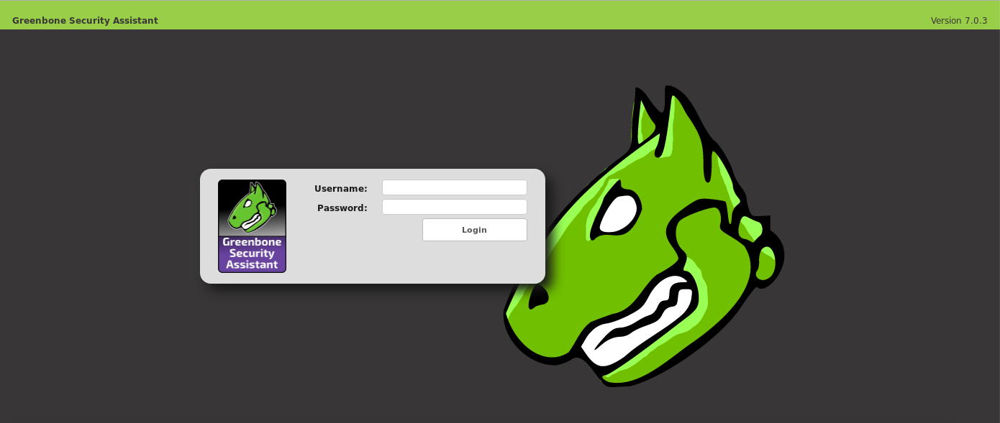
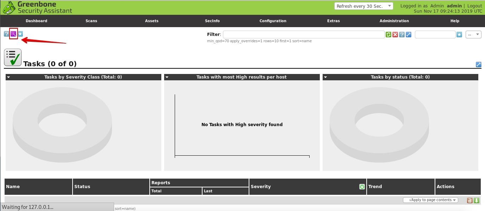
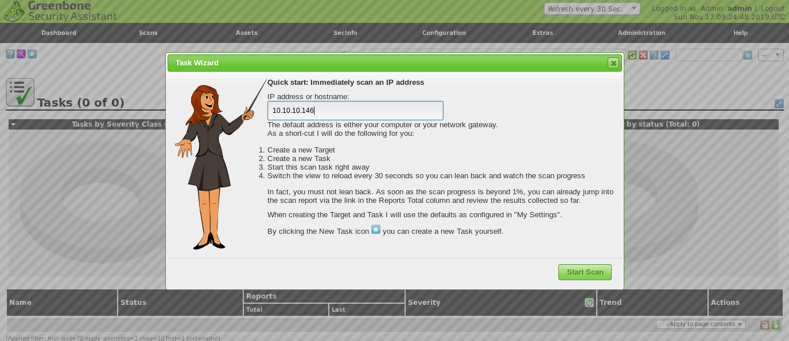
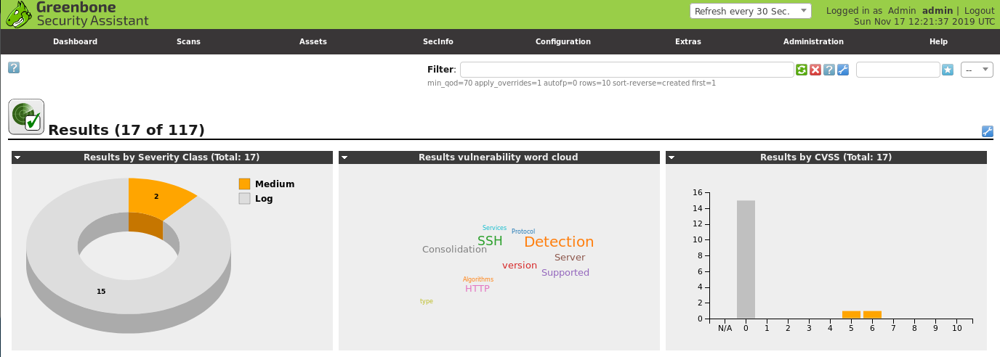
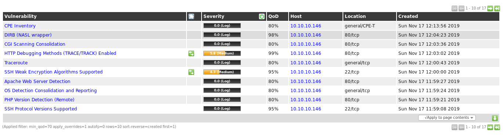
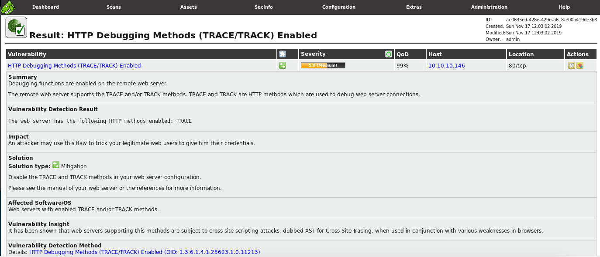

OpenVAS on Kali Linux
Last update on November 2019.
1. Get the latest version of OpenVAS.
root@kali:/#
apt update; apt install openvas
2. Configure OpenVAS.
Make sure you copy the password that's ouputted at the end of the configuration process.
root@kali:/#
openvas-setup
3. If you've already configured the service you can simply run:
root@kali:/#
openvas-start
4. Login to the Greenbone Security Assistant web platform.
OpenVAS was developed and has been maintained by Greenbone Networks since 2009. By the end of the configuration, a new browser tab should automatically open https://localhost:9392/. You can login with admin/[the password you copied].
5. If you forgot your password, you can reset it by running:
root@kali:/#
openvasmd --user=admin --new-password=new_password
6. Go to Scans > Tasks and open the Task Wizard.
7. Enter your target's IP and start the vulnerability scan.
8. Check the results.
 9. Click on a vulnerability to learn more.
